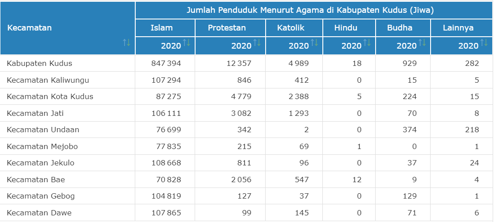

DATA
Data diperoleh dari website resmi Badan Pusat Statistik Kota Kudus

data jumlah penduduk menurut agama di kabupaten kudus tahun 2020

data jumlah rumah ibadah di kabupaten kudus tahun 2019-2020
 Jl. Missi
Jl. Missi 088888080808
088888080808